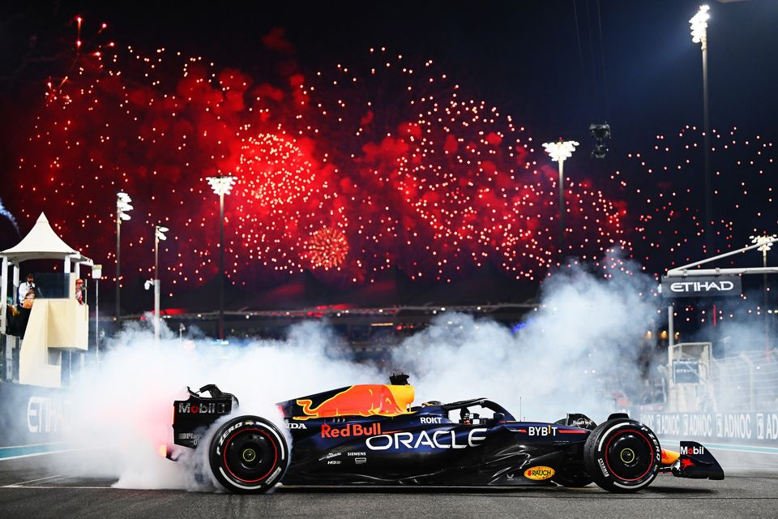
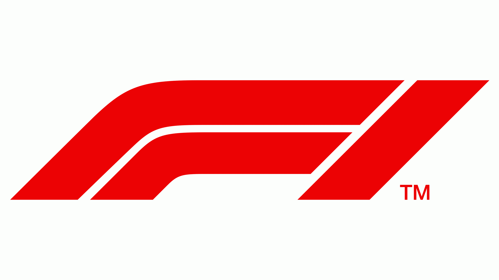

La FIA, ou Fédération Internationale de l'Automobile, est
l'organisme international qui régit diverses disciplines
liées à l'automobile, y compris la Formule 1. La Formule 1
est la catégorie reine du sport automobile, caractérisée par
des voitures de course monoplaces très avancées
technologiquement et des équipes compétitives de renommée
mondiale. La FIA joue un rôle crucial dans la gestion et la
régulation de la Formule 1. Voici quelques-uns des aspects
clé de l'implication de la FIA dans la Formule 1 :
Réglementation : la FIA établit les règles et les
réglementations techniques et sportives de la Formule 1. Ces
règles couvrent divers aspects tels que la conception des
voitures, les normes de sécurité, les procédures de course,
les pénalités, etc.
Sécurité : la sécurité est une priorité majeure pour la FIA.
L'organisation travaille en étroite collaboration avec les
équipes et les circuits pour garantir que les normes de
sécurité les plus élevées sont respectées. Cela inclut la
conception des voitures, les équipements de protection pour
les pilotes, les normes des circuits, etc.
Homologation des circuits : la FIA homologue les circuits
qui accueillent des courses de Formule 1. Cela signifie
qu'elle vérifie que les installations respectent les normes
de sécurité et d'infrastructure nécessaires pour accueillir
un événement de cette envergure.
Licences et accréditations : la FIA délivre des licences aux
pilotes, aux équipes et aux officiels qui participent à la
Formule 1. Ces licences sont attribuées en fonction de
critères tels que l'expérience, les compétences et le
respect des règles. Arbitrage : en cas de litige ou de
violation des règles, la FIA agit comme un organe
d'arbitrage. Elle peut imposer des sanctions, des pénalités
ou d'autres mesures disciplinaires selon la gravité de la
situation. Arbitrage : en cas de litige ou de violation des
règles, la FIA agit comme un organe d'arbitrage. Elle peut
imposer des sanctions, des pénalités ou d'autres mesures
disciplinaires selon la gravité de la situation.


En somme, la FIA exerce une autorité importante dans le
monde de la Formule 1 pour assurer l'équité, la sécurité et
la conformité avec les normes internationales. Son rôle est
essentiel pour le bon déroulement du championnat et la
protection des intérêts des participants et du public.